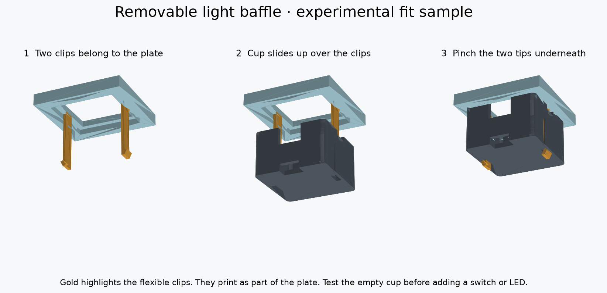

← Codex Micro guideA baffle you can unclip.
Two flexible clips on the plate pass through the cup. Their ends are exposed underneath, where you can pinch them to release it. No glue or extra fasteners.

Gold highlights the clips; they are part of the same print as the plate. Physical snap fit and durability still need testing.
Why release from underneath?
Neighboring cups are only 0.35 mm apart. Underneath release tips avoid reaching between tightly packed keys. A broken clip would still require plate repair or replacement, so test the small sample before committing to the full plate.
Print settings
- PETG: white or clear for the plate sample; black for the light-blocking cup.
- 100% scale, 0.4 mm nozzle, 0.10 mm layers, four walls, 100% infill. Use your existing PETG profile.
- Keep the supplied orientations: plate face down with clips pointing up; cup bottom down with its opening up.
- Supports OFF for the two small samples. Check the slicer shows continuous paths for the thin clips and complete hook tips. Cool before removal; carefully clear strings from the two floor windows.
Test empty, then add a switch
- Disconnect USB. Leave the switch and LED out for the first test.
- Hold the plate with clips pointing down. Align the cup's two narrow floor windows with them and slide the cup upward, opening toward the plate.
- Both tips should emerge through the bottom and catch the cup. Stop if it needs force or either arm buckles.
- Pinch the two exposed tips toward the center, then lower the cup. Do not pry on its rim.
- Repeat about ten gentle cycles. Check for cracks, whitening, bending, looseness or difficult release.
- Once that works, install one real switch from above and check that it latches and moves freely. Dry-fit the cup and an unpowered LED in its shallow pocket, insulating its rear pads. The pocket leaves room below the modeled switch pins; check actual solder and insulation thickness. Nothing should touch the switch pins or block the clips.
Wires need slack.A wired LED stays connected when the cup is unclipped. Leave enough slack to lower the cup clear of the switch, and route the wires through the notches away from the latch channels. Never pull on the solder joints. No electrical connector is included in this version.
What to send back
Tell me whether it clicks on, stays attached and releases easily. A photo of the two tips with the cup attached will help. Test this before soldering or printing all six.
Full plate and CAD
The candidate full plate combines the flat joystick mount v3 and clips for all six light cups. Wait until both small fit tests pass.
The full plate needs a different support setup: its supplied orientation is face down, and the raised joystick seats lift its face off the bed. Supports beneath that face are needed. Do not apply the small sample's supports-OFF settings to the full plate.
Full plate STL — WAIT · STEP
Complete CAD/source kit · Reference assembly (view only) · Detailed instructions · Validation
CAD checks passed for solid meshes, nominal retention and reference clearances. Physical print fit, strength, repeated use, real switch geometry, wire routing and light leakage are unverified. The main site's older animation still shows adhesive-mounted cups.